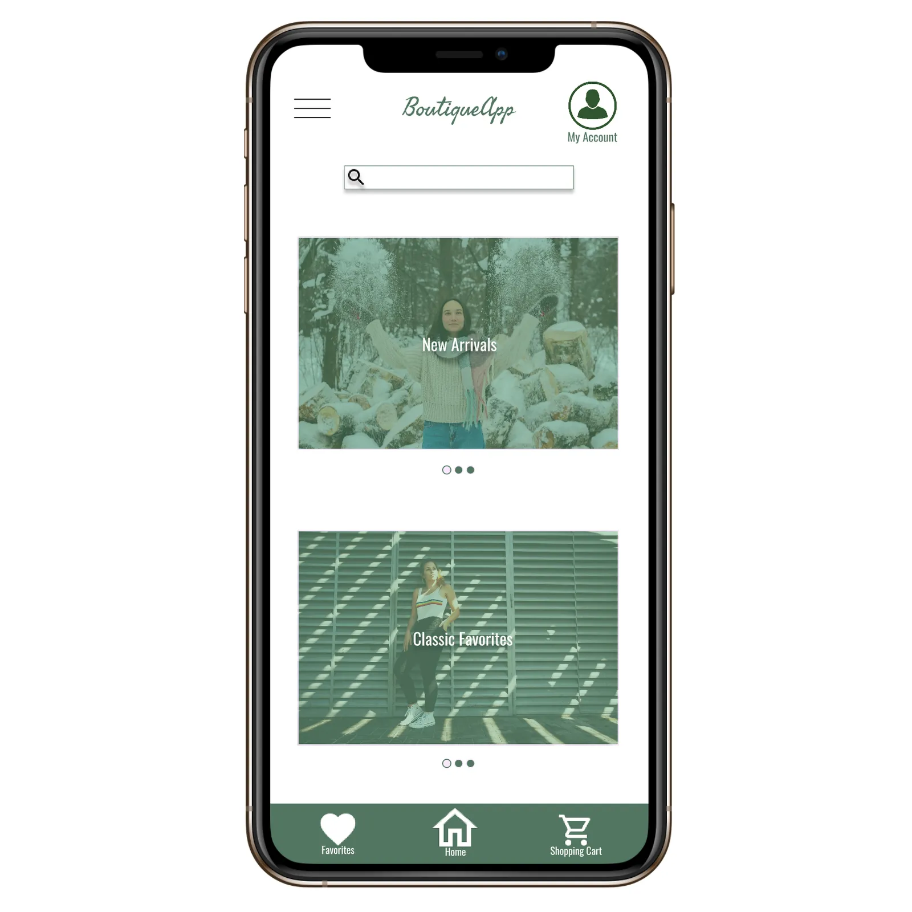
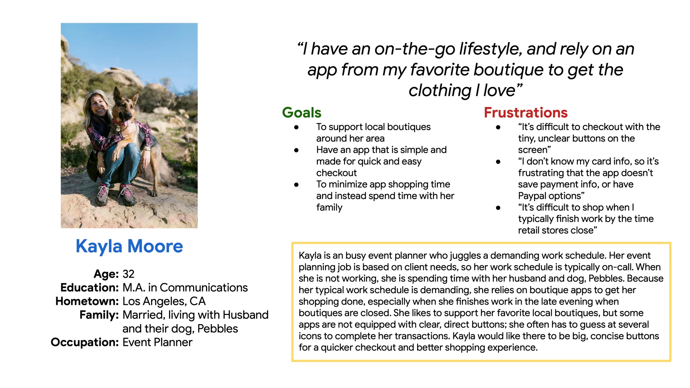
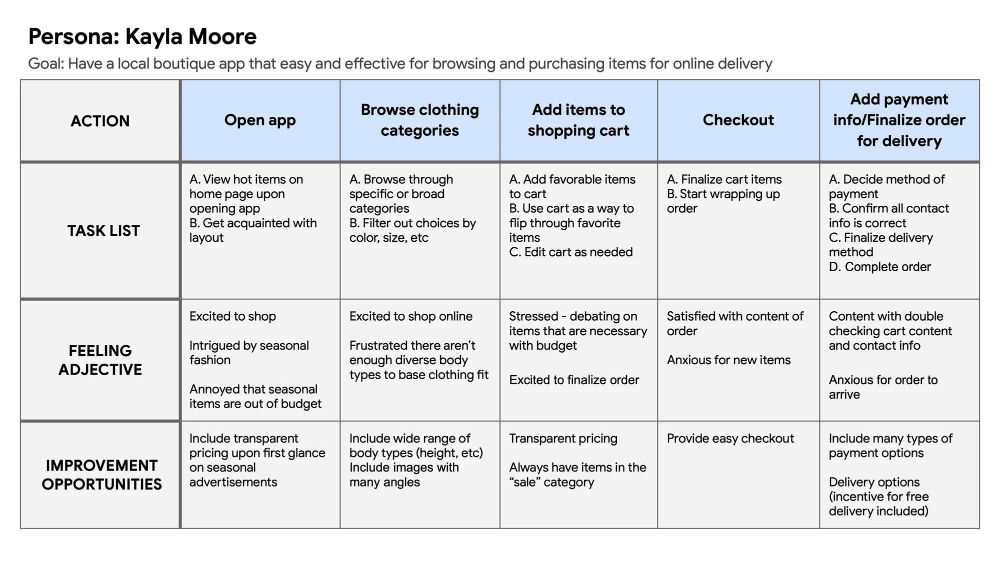
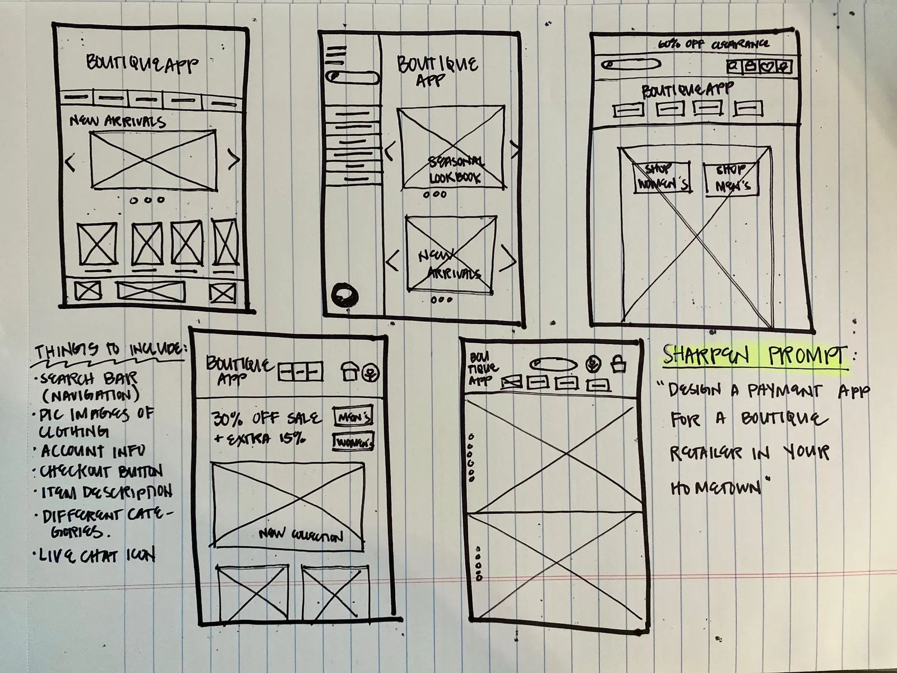
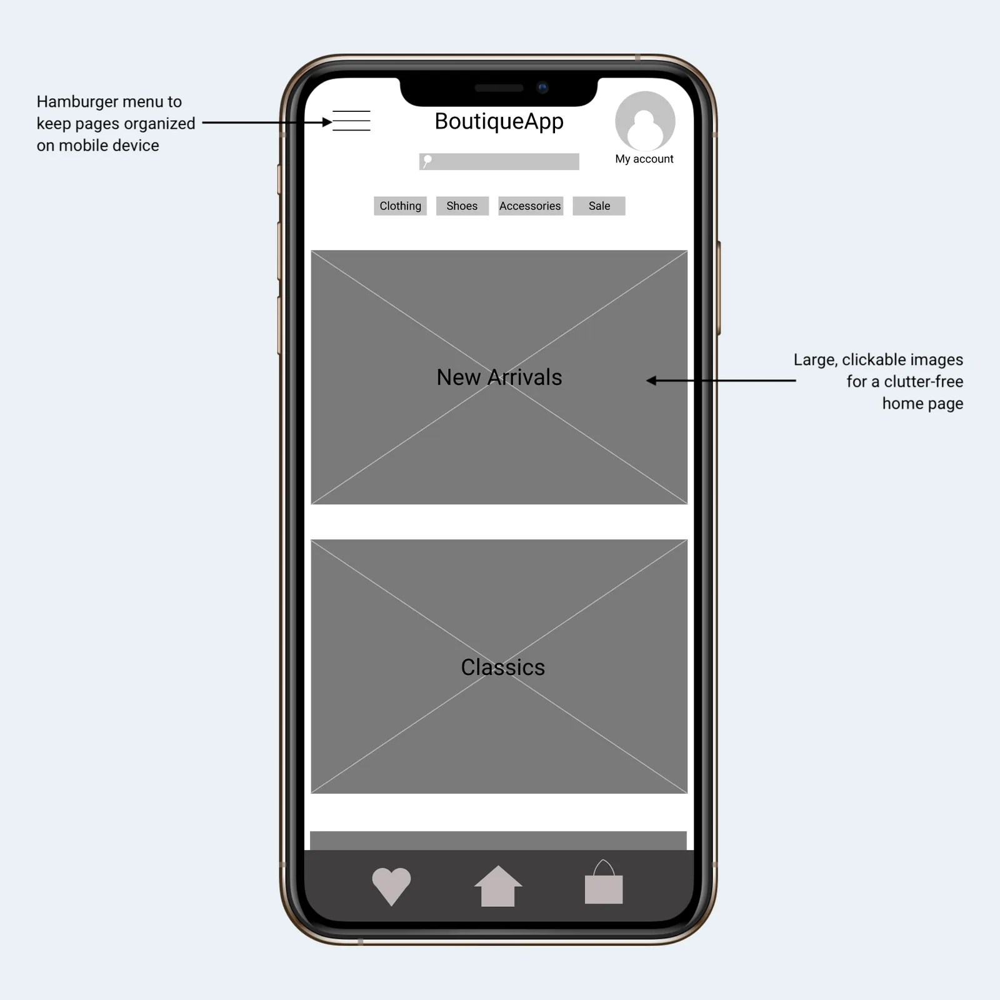
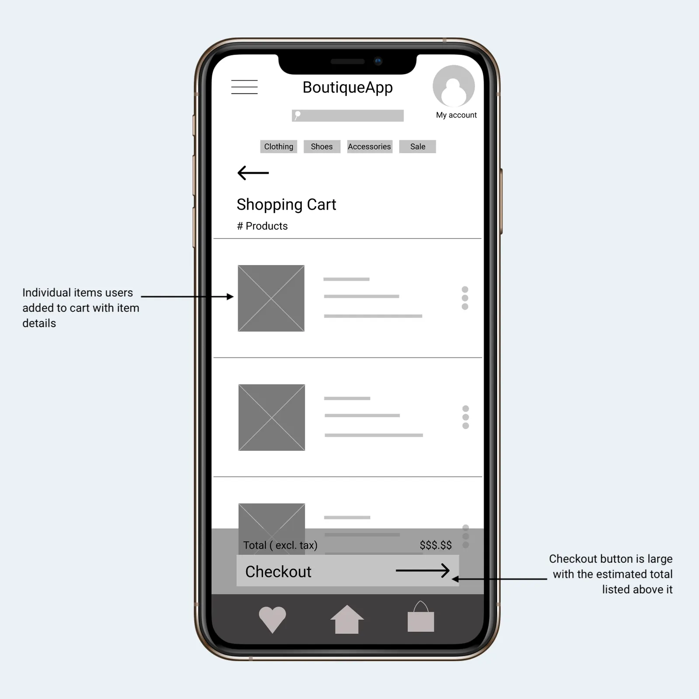
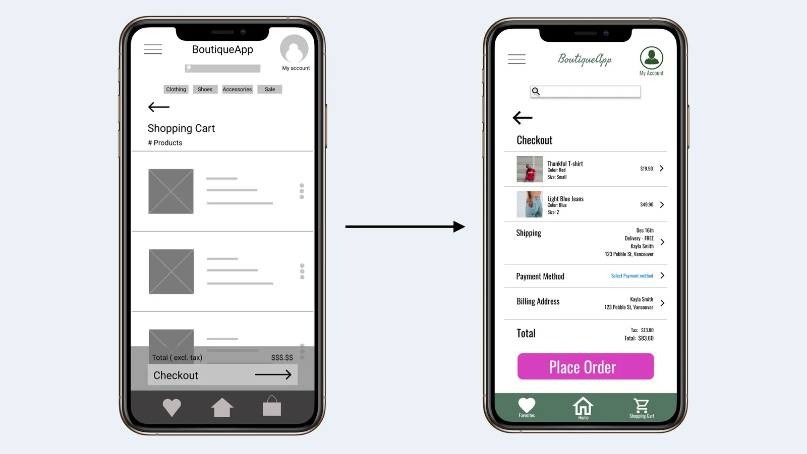
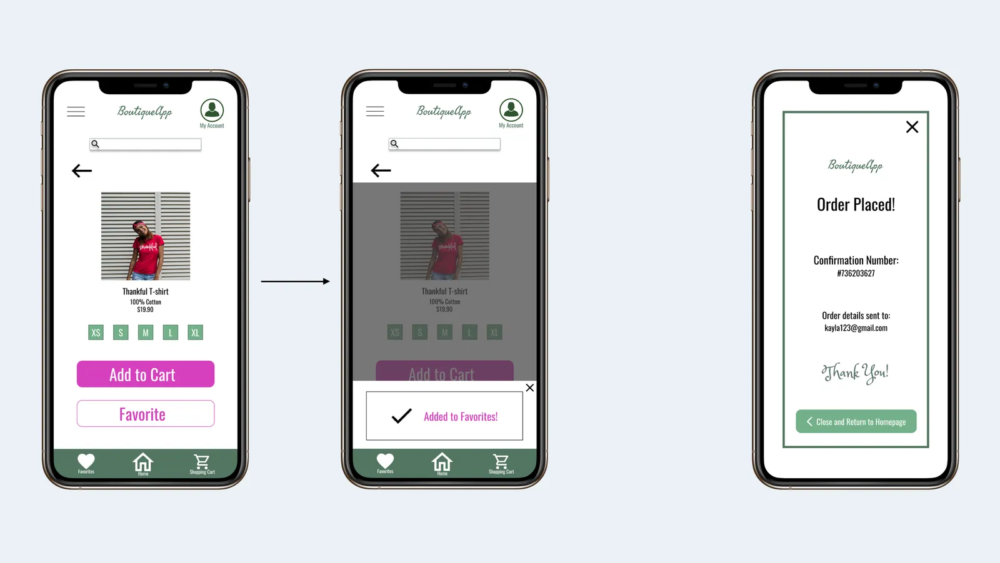
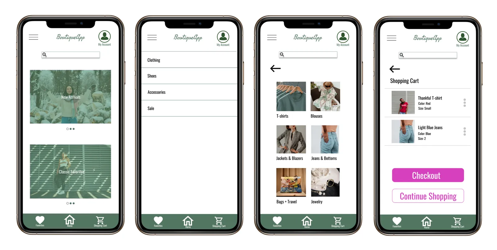
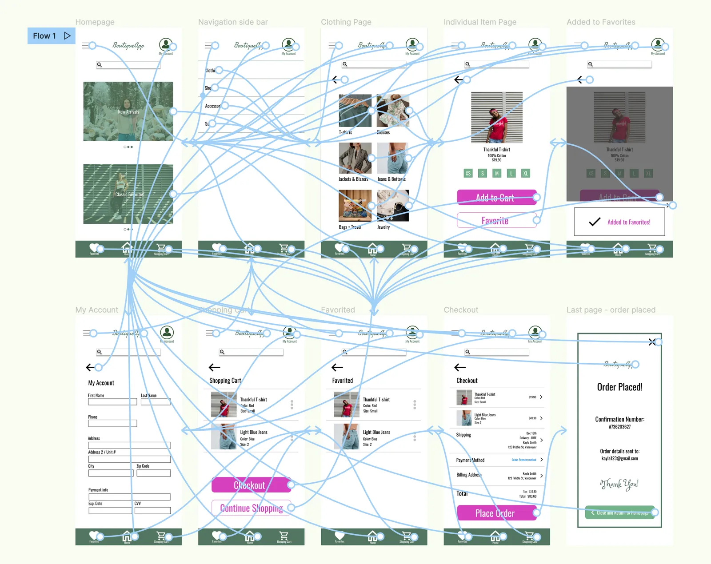

Case Study:
BOUTIQUEAPP
Checkout App Flow

Project Overview
The problem
Busy professionals and individuals who are constantly on-the-go lack time to shop for themselves at the mall
The goal
Design an app that contains all items that would be carried in stores, with detailed pictures, sizing and modeling that will for confidence in purchasing the right item for an individual.
The product
BoutiqueApp is a regional retailer with multiple branches located in the suburbs. They offer all their clothing and accessories modeled by individuals in various sizes and heights so customers get a good idea of how items will fit. BoutiqueApp targets busy professionals who are on-the-go and rely on apps and online ordering to get their purchasing done.
My role
UX Designer in charge of BoutiqueApp's design from conception to delivery
Responsibilities
Conducting interviews, low-fidelity paper + digital wireframes, high-fidelity prototypes, usability studies, planning for accessibility, and iterating on designs.
Project duration
September 2021 - January 2022
Understanding the user
I planned out questions, conducted interviews and created empathy maps to understand the user’s needs and target a good user flow. A primary user group identified during the research included individuals who lead busy lives (work, school) and don’t have time to spend at the mall. This user group confirmed initial assumptions, but also revealed that individuals were more interested in leisure, outdoor activities and valued family time than spending their time commuting, browsing and physically shopping at the mall. All these factors combined were reasons for individuals to prefer shopping via an app.
User pain points
1. Time
Individuals did not want to spend a large amount of time commuting to stores and browsing them in-person
2. Size Accuracy
Digital platforms were not thorough with providing enough material to determine accurate sizing
3. Clutter
Too much text and images spread out on a page were difficult to browse on
Persona & Problem statement
Kayla is a busy event planner who needs to do her shopping online because her sporadic work schedule allows her to shop around her clients' needs, whenever that may be

Text version of Kayla Moore's persona
“I have an on-the-go lifestyle, and rely on an app from my favorite boutique to get the clothing I love”
- Age: 32
- Education: M.A. in Communications
- Hometown: Los Angeles, CA
- Family: Married, living with her husband and their dog, Pebbles
- Occupation: Event Planner
Goals
- Support local boutiques in her area
- Have an app that is simple and made for quick, easy checkout
- Minimize shopping time and spend more time with family
Frustrations
- “It’s difficult to check out with the tiny, unclear buttons on the screen”
- “I don’t know my card info, so it’s frustrating that the app doesn’t save payment info or have PayPal options”
- “It’s difficult to shop when I typically finish work by the time retail stores close”
Kayla is a busy event planner with a demanding, on-call work schedule. When she isn’t working, she spends time with her husband and dog. She relies on boutique apps to shop, especially late in the evening after boutiques have closed. She likes supporting her favorite local boutiques, but some apps lack clear, direct buttons, so she has to guess at icons to complete a purchase. She wants big, concise buttons for a quicker checkout.
User journey map
Mapping Kayla’s journey revealed how helpful it would be for users to have a clothing app that had accurate sizing and an easy checkout process.

Text version of Kayla Moore's journey map
Goal: Have a local boutique app that is easy and effective for browsing and purchasing items for online delivery
| Action | Tasks | Feelings | Improvement opportunities |
|---|---|---|---|
| Open app | View hot items on the home page; get acquainted with the layout | Excited to shop; intrigued by seasonal fashion; annoyed that seasonal items are out of budget | Show transparent pricing at first glance on seasonal advertisements |
| Browse clothing categories | Browse specific or broad categories; filter by color, size, etc. | Excited to shop online; frustrated there aren’t enough diverse body types to judge fit | Include a wide range of body types and images from many angles |
| Add items to shopping cart | Add favorite items to cart; use the cart to flip through favorites; edit the cart as needed | Stressed deciding which items fit the budget; excited to finalize the order | Transparent pricing; always have items in a sale category |
| Checkout | Finalize cart items; start wrapping up the order | Satisfied with the order; anxious for new items | Provide an easy checkout |
| Add payment info and finalize order for delivery | Choose payment method; confirm contact info; choose delivery method; complete order | Content after double-checking the cart and contact info; anxious for the order to arrive | Include many payment options and delivery options, with an incentive for free delivery |
Starting the design
Paper wireframes
I started drafting iterations of a homescreen page with user pain points in mind. The initial designs focused on a clean landing page with straightforward navigation.

Digital wireframes

As the design phase continued, I also made iterations based on user comments and concerns, and strived to make the overall user flow easy to follow.

Organized navigation located in one place for mobile device was a crucial design element for user accessibility.
Usability Study Findings
Two rounds of usability studies were conducted and helped guide iterations moving forward. The first study assisted in design needs from wireframes to mockups, while the second study used a high-fidelity prototype and revealed what sections of the mockups needed to be updated.
Round 1 Findings
- Users want details on sizing
- Users want a quick checkout
- Users want a noticeable account icon
Round 2 Findings
- The checkout button was too large and cluttered the page
- The logo should be present on the "Order Placed" screen so users could get back to the home page
Refining the design
Mockups

In early designs, I spaced out items the shopping cart far away from each other. After the first usability study, users wanted a more concise organization of shopping cart details.
Mockups 2 (after 2nd usability study)

The second usability study revealed confusion when the "Add to Favorites" button was hit on an item page, there was no indication that action was complete, so I added a pop-up notification confirming the action.
Accessibility considerations
WCAG
WCAG contrast between text and color were cross-checked to ensure readability
Labeled icons
Icons with small labels beneath (e.g. Account icon) were used to ensure it's function is clear
Buttons
Large, bold call-to-action buttons were used to grab users' attention
Refined designs

High-fidelity prototype
The final high-fidelity prototype is a lot cleaner and simpler for users to browse items, add to cart, and checkout.
View the BoutiqueApp high-fidelity prototype here

Going forward
Takeaways
Impact
The app allows individuals to feel comfortable in purchasing items that will fit well, and confident that the store is thorough in sharing item details.
One quote from peer feedback:
“The app made it easy for me to shop online! I’m confident
that what will arrive at my doorstep is something I won’t have
to return later in-store.”
What I learned
I’ve learned to keep design elements simple. The layout and call-to-action buttons should be clear and clean for a user to press buttons with minimal confusion.